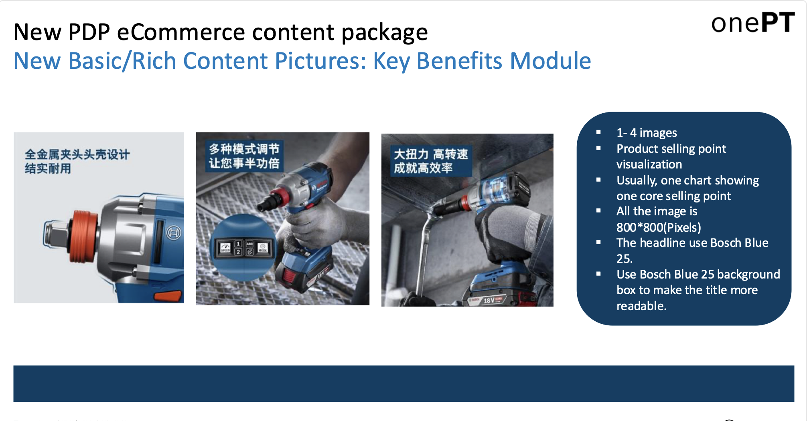
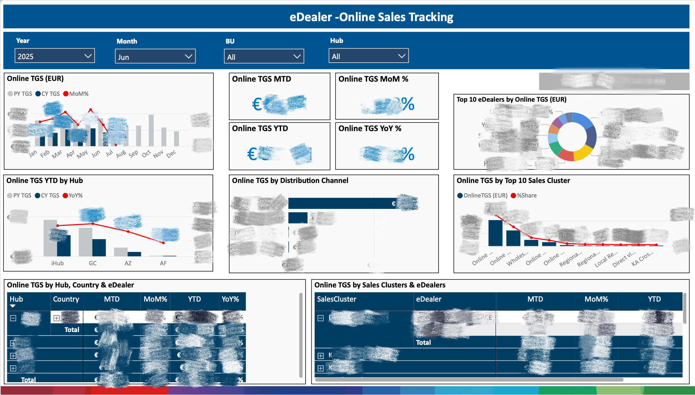
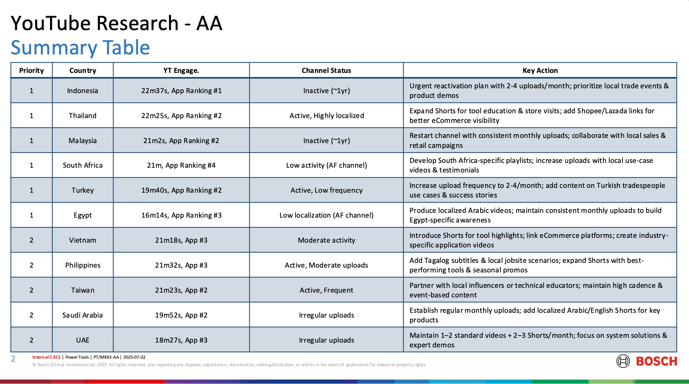
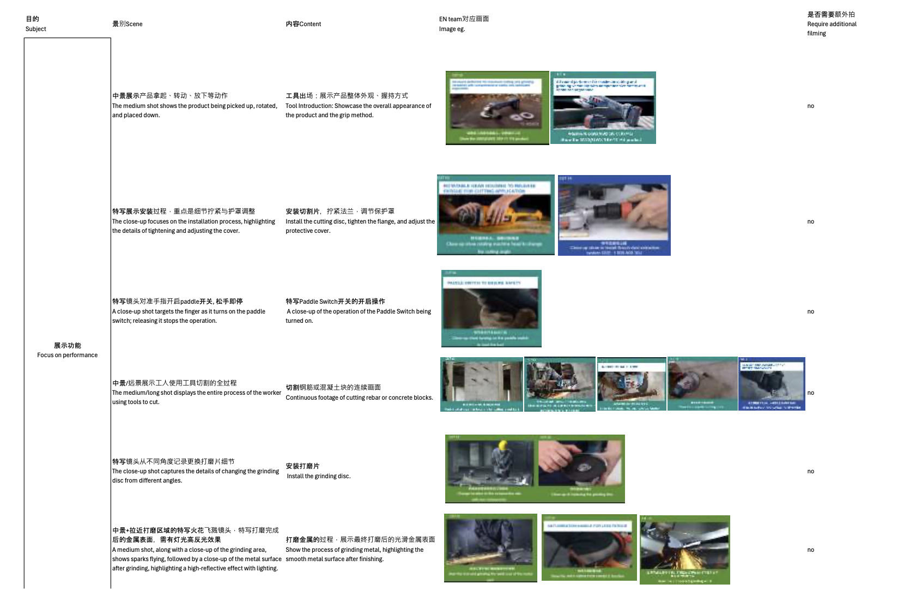

eCommerce Content Creation Guidelines for China
Contributed to Bosch’s eCommerce strategy by developing content creation guidelines
tailored for the Chinese market. I adapted global PDP modules into localized “Basic”
and “Rich” content packages, including product visuals, comparison tables, and
feature videos, ensuring alignment with local user behaviors and platform standards
(Tmall, JD).
In this project, I supported content rollout for 50+ SKUs, created benchmarks for
short video formats, and collaborated across regional markets to enhance visual
consistency and user trust. The guidelines not only standardized Bosch’s content
creation process in China but also improved brand coherence, boosted product appeal,
and supported higher conversion rates across online platforms.

Use of Short Videos for Shopee & Lazada
Conducted a benchmarking study on how leading power tool brands (Makita, Dongcheng,
TOTAL) use short videos across Shopee and Lazada. I analyzed official introductions,
comparison tests, and operation demonstration formats, focusing on duration, screen
ratio, camera angles, and content structure.
Based on the findings, I developed best-practice guidelines and crafted
operation-based video scripts optimized for mobile UX. These recommendations helped
Bosch enhance production efficiency, align with platform standards, and deliver
engaging video content that resonates with regional audiences.
Key Touchpoint Dashboard
Developed and maintained a Power BI dashboard to consolidate Bosch’s digital
marketing data across Meta Ads, CRM, and YouTube, with a focus on tracking eDealer
online sales. The dashboard provided a single view of KPIs including impressions,
CTR, engagement, and revenue, segmented by region and eDealer.

YouTube Research – Emerging Markets
Conducted in-depth research on Bosch’s YouTube presence across high-priority markets
including Southeast Asia, the Middle East, and Africa. I analyzed channel performance
metrics (watch time, upload frequency, engagement) and benchmarked against
competitors to identify gaps in localization, content cadence, and eCommerce
integration.
Based on the findings, I provided market-specific recommendations such as reactivating
inactive channels, expanding Shorts, improving local language support, and linking to
Shopee/Lazada. These insights guided Bosch’s regional digital strategy, helping align
YouTube content with user behavior and market potential.

Translation Workflow & Issues Management
Supported Bosch’s translation workflow across multiple touchpoints including eDealer,
MCRM, and social media assets. I identified language inconsistencies (e.g., local
dialects, punctuation errors, misapplied translations) and coordinated proofreading
feedback from 8+ markets to improve accuracy and efficiency.
Product Feature & Safety Video – Shooting Script
Created a detailed short video shooting script for Bosch’s product feature and
safety demonstration video. The script covered full user scenarios from product
introduction and installation to real cutting and grinding operations, with
close-ups highlighting sparks, grip, and tool performance.
Special focus was placed on safety features, including the Paddle Switch (instant
stop), Kickback Control, and power cut-off protection. By combining live-action shots
with animated explanations, the script ensured both technical clarity and strong
visual storytelling.
